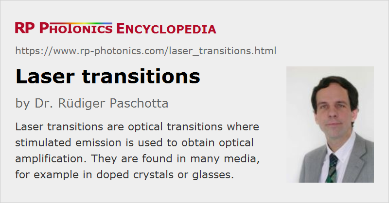

Laser Transitions
Definition: optical transitions where stimulated emission is used to obtain optical amplification
More specific term: self-terminating laser transitions
German: Laserübergänge
Categories: lasers, optical amplifiers, physical foundations
How to cite the article; suggest additional literature
Author: Dr. Rüdiger Paschotta
A laser transition (or amplifier transition) is a transition between two electronic levels of some laser-active ion, for example, where stimulated emission can take place and this leads to optical amplification. This amplification can be used in an optical amplifier or a laser.
Certain conditions should usually be fulfilled so that some optical transition can serve as an efficient laser transition:
- It must be possible in some way to strongly populate the upper level, e.g. via optical pumping.
- Ideally, stimulated emission from the upper level to the lower level should be the dominating process, i.e., any additional radiative and non-radiative transitions should be comparatively weak. In quantitative terms, the upper-state lifetime should be large compared with the inverse stimulated emission rate.
- There should be a mechanism which quickly depopulates the lower laser level after stimulated emission, so that reabsorption on that transition cannot have a strong effect.
Some laser gain media offer laser transitions with nearly ideal characteristics. For example, the neodymium ions in Nd:YAG exhibit a transition from the upper Stark manifold 4F3/2 to the lower manifold 4I11/2, where stimulated emission at a wavelength of 1064 nm can occur. Efficient pumping is possible e.g. around 808 nm (although with a significant quantum defect), spontaneous emission from the upper level is reasonably weak (due to the narrow emission bandwidth), and the lower level is rapidly depopulated via multi-phonon transitions.
There are also media with quasi-three-level laser transitions, where the last condition is not well fulfilled, because the lower level belongs to the ground state manifold. Examples are the 1030-nm and the 1050-nm transitions in Yb:YAG and the 946-nm transition from 4F3/2 to the ground state manifold 4I9/2 in Nd:YAG. The resulting reabsorption on the laser transition tends to increase the threshold pump power, but on the other hand such transitions can have a rather low quantum defect, and thus allow fairly efficient laser operation provided that the laser design is optimized accordingly.
Questions and Comments from Users
Here you can submit questions and comments. As far as they get accepted by the author, they will appear above this paragraph together with the author’s answer. The author will decide on acceptance based on certain criteria. Essentially, the issue must be of sufficiently broad interest.
Please do not enter personal data here; we would otherwise delete it soon. (See also our privacy declaration.) If you wish to receive personal feedback or consultancy from the author, please contact him e.g. via e-mail.
By submitting the information, you give your consent to the potential publication of your inputs on our website according to our rules. (If you later retract your consent, we will delete those inputs.) As your inputs are first reviewed by the author, they may be published with some delay.
See also: stimulated emission, four-level and three-level gain media, upper-state lifetime, transition cross sections, optical amplifiers, lasers
and other articles in the categories lasers, optical amplifiers, physical foundations
|  |
If you like this page, please share the link with your friends and colleagues, e.g. via social media:
These sharing buttons are implemented in a privacy-friendly way!